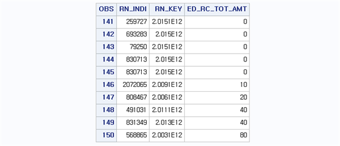
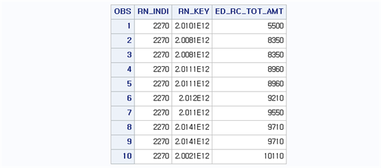
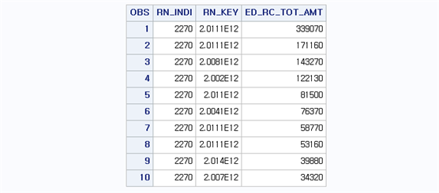
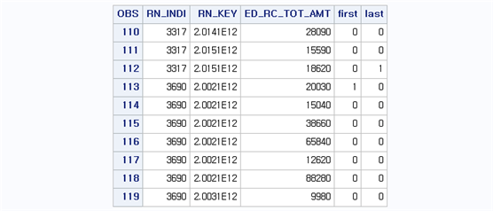
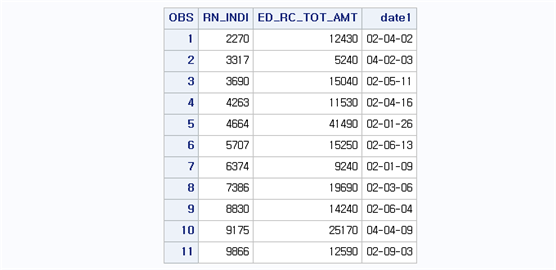
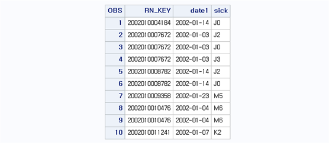
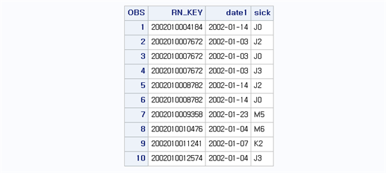
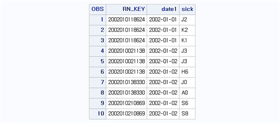
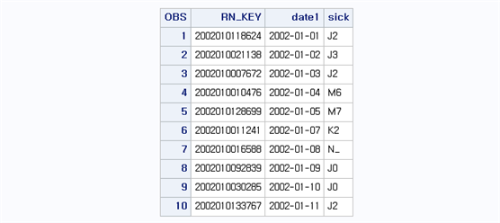

Chapter 6 자료의 정렬
6.1 하나의 변수에 의한 관찰값의 정렬
자료의 정렬은 DATA step이 아니라 PROC step에서 이루어진다. 다만 정렬행위 자체가 데이터의 형태를 변형시키며(내용은 그대로이나 표현순서가 달라짐), 정렬 후 결과를 바탕으로 새로운 데이터셋을 생성시킬 때 영향을 미치므로 이 장에서 먼저 살펴보기로 한다. 데이터를 정렬하기 위해서는 정렬을 위한 기준 변수가 있어야 하며, 먼저 기준 변수가 하나인 경우부터 살펴보자. 정렬을 위한 PROCEDURE 이름은 SORT이며, 사용 방법은 다음과 같다.
PROC SORT DATA=라이브러리.기존데이터셋명 OUT=라이브러리.새로운데이터셋명;
BY (DESCENDING) 기준 변수;
RUN;여기서 OUT 옵션은 기존 데이터셋을 기준 변수로 정렬 후 새로운 데이터셋으로 저장하고 싶은 경우 사용하며, 기존 데이터셋 자체를 새로이 정렬하고자 하면 OUT 옵션 없이 사용하면 된다. BY문은 기준 변수를 지정할 때 사용되는 옵션이며 SORT PROCEDURE에서는 BY 옵션에 지정된 변수를 기준으로 데이터가 정렬되며 기본은 오름차순이다. 내림차순으로 데이터를 정렬하려면 [BY DESCENDING 기준 변수;]처럼 기준 변수 앞에 DESCENDING 옵션을 주면 된다. 정렬 순서는 다음과 같다.
※ 숫자변수의 정렬순서결측값, 음수, 0, 양수
※ 문자변수의 정렬순서공백 ! “# $ % & ‘ () * + - . / 0 1 2 3 4 5 6 7 8 9 : ; < = > ? @ A B C D E F G H I J K L M N O P Q R S T U V W X Y Z [ ] _ a b c d e f g h I j k l m n o p q r s t u v w x y z { | } ~ BB.T20 데이터셋에서 심결요양급여비용총액(ED_RC_TOT_AMT) 변수를 기준으로 오름차순으로 정렬시켜 BB.T20_SORT 데이터셋에 저장해보자. 이를 위한 프로그램은 다음과 같다.
proc sort data=bb.t20 out=bb.t20_sort;
by ed_rc_tot_amt;
run;
proc print data=bb.t20_sort(firstobs=141 obs=150);
var rn_indi rn_key ed_rc_tot_amt;
run;
결과를 살펴보면 ED_RC_TOT_AMT를 기준으로 오름차순으로 자료가 정렬되어 있음을 알 수 있다. 하나의 변수값에 의해 정렬을 하는 경우, 기준 변수가 같은 값을 가질 때(tie가 존재하면) 같은 값 내에서는 원래 데이터셋의 관찰값의 순서를 그대로 유지한다. 즉, 결과의 148번 개체와 149번 개체는 ED_RC_TOT_AMT의 값이 40으로 동일하다. 이러한 경우 원래 데이터셋에서 148번 개체의 순서가 제일 빠르고 149번 개체의 순서 순으로 정렬되어 있었음을 의미한다.
6.2 여러 개의 변수에 의한 관찰값의 정렬
데이터 정렬 시 기준 변수가 하나가 아닌 여러 개의 변수를 사용할 때 BY 옵션 다음에 기준 변수를 순서대로 나열하며, 사용 방법은 다음과 같다.
PROC SORT DATA=라이브러리.데이터셋명 OUT=라이브러리.새로운데이터셋명;
BY (DESCENDING) 기준 변수1 (DESCENDING) 기준 변수2 ...;
RUN;여러 변수를 기준으로 데이터 정렬시 정렬 순서는 BY 문 바로 다음에 나오는 기준 변수1을 기준으로 먼저 데이터를 정렬한다. 그 후 같은 값을 가지는 개체가 여러 개 있다면 그 안에서 기준 변수2를 기준으로 정렬하며, 같은 값을 가지는 개체가 있다면 기준 변수 3을 기준으로 다시 세부적으로 정렬한다. 이때 정렬은 오름차순으로 이루어지며, 내림차순으로 정렬하고 싶다면 변수마다 DESCENDING 옵션을 붙여줘야 한다.
BB.T20 데이터셋에서 개인고유번호(RN_INDI)로 자료를 오름차순으로 정렬하고, 같은 값이 존재하는 경우 심결요양급여비용총액(ED_RC_TOT_AMT) 변수를 기준으로 오름차순으로 정렬시켜 BB.T20_SORT2 데이터셋에 저장해보자. 이를 위한 프로그램은 다음과 같다.
proc sort data=bb.t20 out=bb.t20_sort2;
by rn_indi ed_rc_tot_amt;
run;
proc print data=bb.t20_sort2(obs= 10);
var rn_indi rn_key ed_rc_tot_amt;
run;
정렬된 양상을 보면 RN_INDI 변수에 의해 오름차순으로 정렬되고, RN_INDI가 같은 값을 가질 경우 ED_RC_TOT_AMT 변수를 기준으로 오름차순으로 정렬된 것을 볼 수 있다. BB.T20 데이터셋에서 개인고유번호(RN_INDI)로 자료를 오름차순으로 정렬하고, 같은 값이 존재하는 경우 심결요양급여비용총액(ED_RC_TOT_AMT) 변수를 기준으로 내림차순으로 정렬시켜 BB.T20_SORT3 데이터셋에 저장해보자. 이를 위한 프로그램은 다음과 같다.
proc sort data=bb.t20 out=bb.t20_sort3;
by rn_indi descending ed_rc_tot_amt;
run;
proc print data=bb.t20_sort3(obs= 10);
var rn_indi rn_key ed_rc_tot_amt;
run;
정렬된 양상을 보면 RN_INDI 변수에 의해 관찰값들이 오름차순으로 정렬되고 ED_RC_TOT_AMT 변수에 대해 내림차순으로 정렬되었다.
6.3 First 변수와 Last 변수 사용하기
데이터가 기준 변수를 기준으로 정렬되면 SAS는 자동적으로 두 개의 변수, FIRST.기준변수와 LAST.기준변수를 생성한다. 만약 ID 변수를 기준으로 자료를 정렬하면 FIRST.ID와 LAST.ID 변수가 자동적으로 생성된다. 이때 FIRST.ID와 LAST.ID는 1과 0의 값을 가지며 내부적으로는 1=TRUE, 0=FALSE와 같은 형태로 인식한다. 예를 들어 우리가 가지고 있는 데이터가 ID 변수 하나이며 그 값이 (1,1,1,2,2,3)과 같다고 하자. FIRST.ID는 ID 값이 나누어지는 기준마다 첫 번째 값에 1을 부여하고 나머지는 0을 부여한다. 따라서 FIRST.ID는 (1,0,0,1,0,1)과 같은 값을 가지게 된다. 또한 LAST.ID는 ID 값이 나누어지는 기준마다 마지막 값에 1을 부여하고 나머지는 0을 부여한다. 따라서 LAST.ID는 (0,0,1,0,1,1)의 값을 가지게 된다. FIRST.기준변수 혹은 LAST.기준변수가 적용되는 방법을 살펴보자.
proc sort data=bb.t20 out=bb.t20_sort;
by rn_indi;
run;
data bb.t20_sort_first;
set bb.t20_sort;
by rn_indi;
first = first.rn_indi;
last = last.rn_indi;
run;
proc print data=bb.t20_sort_first (firstobs=110 obs=119);
var rn_indi rn_key ed_rc_tot_amt first last;
run;
결과를 살펴보면 BB.T2_SORT 데이터셋은 BB.T20 데이터셋을 RN_INDI 변수를 기준으로 오름차순으로 정렬한 데이터셋이다. 이를 바탕으로 BB.T20_SORT_FIRST 데이터셋을 생성시키며, FIRST와 LAST 변수를 새로 생성시킨다. 이때, SET 구문 다음에 기준 변수를 나타내는 BY 문을 이용하며, BY 문 다음에 나오는 기준 변수는 SORT PROCEDURE에서 사용된 BY 문의 기준 변수와 같은 변수를 지정한다. 즉, SET 다음에 나오는 BY 문은 기준 변수에 의해 이미 정렬된 경우에 사용 가능하다. FIRST.RN_INDI와 LAST.RN_INDI 변수는 SORT PROCEDURE에 의해 자동 생성되며, FIRST와 LAST 변수는 이들을 불러낸 결과이다. FIRST 변수를 살펴보면, RN_INDI 값이 3317인 경우에 첫 번째 개체의 값이 1이고 나머지는 0으로 표현된다. 마찬가지로 RN_INDI=3690인 경우 첫 번째 개체의 값이 1이고 나머지는 0이다. 즉, FIRST 변수는 SORT PROCEDURE에서 RN_INDI를 기준으로 정렬된 경우 RN_INDI의 각 값의 첫 번째 개체는 1 나머지는 0으로 표현된 FIRST.RN_INDI의 값을 그대로 담아낸 결과이다. 마찬가지로 LAST 변수는 SORT PROCEDIRE에서 RN_INDI를 기준으로 정렬된 경우 RN_INDI의 각 값의 마지막 개체는 1 나머지는 0으로 표현된 LAST.RN_INDI의 값을 담아낸 결과이다.
FIRST.기준변수 와 LAST.기준변수는 특정한 조건에 해당하는 관찰값만 추출할 때 유용하다. 예를 들어 일정한 기간 내에 환자들을 정렬한 후 첫 번째 방문 일자 혹은 마지막 방문 일자에 해당하는 명세서를 추출 할 때 사용하면 편리하다. BB.T20 데이터셋에서 요양개시일자(MDCARE_STRT_DT)를 날짜 변수로 변환하고(DATE1) 각 환자의 첫 요양개시일에 해당하는 명세서를 추출하여 BB.T20_FIRST에 저장해보자. 이를 위한 프로그램은 다음과 같다.
data bb.t20_first;
set bb.t20;
format date1 yymmdd8.;
date1 = input(mdcare_strt_dt,yymmdd8.);
run;
proc sort data=bb.t20_first;
by rn_indi date1;
run;
data bb.t20_first;
set bb.t20_first;
by rn_indi;
if first.rn_indi;
run;
proc print data=bb.t20_first(obs= 11);
var rn_indi ed_rc_tot_amt date1;
run;
결과를 살펴보면, 환자 아이디 2270의 경우, 의료기관을 처음으로 내원한 날짜가 2002년 2월 4일인 것을 알 수 있다. 마찬가지로 환자 아이디 3317의 경우 처음 의료기관을 내원한 날짜는 2003년 4월 2일이다. 프로그램에서 환자별로 첫 번째 명세서를 추출하기 위해 [IF FIRST.RN_INDI;]를 이용하였다. 이는 [IF FIRST.RN_INDI=1;]의 축약형태로 둘 중 어느 형태를 써도 무방하다.
FIRST.기준변수와 누적값을 이용하면 동일한 ID 혹은 동일한 명세서별로 순위 부여가 가능하다. 예를 들어, BB.T20 데이터셋에서 요양개시일자(MDCARE_STRT_DT)를 이용해 날짜변수(DATE1)를 생성하고, 개인고유번호(RN_INDI)와 요양개시일자를 이용하여 자료를 정렬한 다음 개인고유번호내에서 순위를 부여할 수 있다. 이를 위한 프로그램은 다음과 같다.
data bb.t20_order;
set bb.t20;
format date1 yymmdd8.;
date1 = input(mdcare_strt_dt,yymmdd8.);
run;
proc sort data=bb.t20_order;
by rn_indi date1;
run;
data bb.t20_order;
set bb.t20_order;
by rn_indi;
if first.rn_indi then order=0;
order+1;
run;
proc print data=bb.t20_order(obs= 11);
var rn_indi ed_rc_tot_amt date1 order;
run;여기서 [BY RN_INDI; IF FIRST.RN_INDI THEN ORDER=0;]은 RN_INDI를 기준으로 자료가 정렬되었다면, RN_INDI가 가지는 각각의 값을 기준으로 첫 번째 개체마다 ORDER 변수는 0의 값을 가지며, 나머지 값은 결측으로 처리된다. 여기에 [ORDER+1;] 명령어가 주어지면 RN_INDI의 값 내에서 ORDER의 값이 1씩 증가하는 순위가 생성된다. 결과를 살펴보면, RN_INDI가 2270일 때 ORDER는 1부터 82까지 순위가 생성되었다. 즉, 개인고유번호 2270의 경우, 총 82번의 의료기관 내원기록이 있음을 알 수 있고, 마지막 의료기관 내원 일자가 2014년 12월 12일임을 파악할 수 있다. 마찬가지로 개인고유번호가 3317인 경우, 순위가 1부터 30까지 생성되었다.

6.4 동일한 관찰값의 제거
동일한 개체가 중복되어 나타나는 경우 SORT PROCEDURE에서 NODUPLICATES (NODUP) 옵션을 이용하여 중복 개체를 제거할 수 있다. 이때 NODUPLICATES 또는 간단히 NODUP 옵션은 개체가 가지고 있는 모든 변수의 값이 동일한 경우 중복되는 개체를 제거한다. 사용방법은 다음과 같다.
PROC SORT DATA=라이브러리.데이터셋명 OUT=라이브러리.새로운데이터셋명 NODUPLICATES;
BY (DESCENDING) 기준 변수1 (DESCENDING) 기준 변수2 ...;
RUN;예제를 위해, BB.T40 데이터셋으로부터 요양개시일자(MDCARE_STRT_DT)를 이용해 날짜변수(DATE1)를 생성하고, 요양급여상병기호(MCEX_SICK_SYM)를 첫 두 자리만 추출하여 SICK 변수를 생성한 다음 BB.T40_NODUP 데이터셋을 생성해보자.
data bb.t40_nodup;
set bb.t40;
format rn_key $ 15. date1 yymmdd10.;
sick = substr(mcex_sick_sym,1,2);
date1 = input(mdcare_strt_dt,yymmdd8.);
keep rn_key sick date1;
run;
proc sort data=bb.t40_nodup;
by rn_key date1;
run;
proc print data=bb.t40_nodup (obs=10); run;
BB.T40_NODUP 데이터셋에서 청구고유번호(RN_KEY), DATE1, SICK 변수만 남겨서 RN_KEY, DATE1에 대해 정렬하면 위와 같은 결과를 얻을 수 있다. 청구고유번호가 ‘2002010010476’ 의 경우 DATE1은 ‘2002-01-04,’ SICK는 ‘M6’로 모든 값이 같음을 알 수 있다. 따라서 중복된 개체를 제거해보자. 이를 위한 프로그램은 다음과 같다.
proc sort data=bb.t40_nodup out=bb.t40_nodup2 nodup;
by rn_key date1;
run;
proc print data=bb.t40_nodup2 (obs=10); run;
중복된 개체를 삭제하기 위해 SORT PROCEDURE에서 NODUPLICATES 옵션을 사용하며, 좀 더 간략하게 NODUP을 사용해도 무방하다. 결과를 살펴보면 청구고유번호 ‘2002010010476’은 두 개 중에 하나만 남아있다는 것을 알 수 있다. 중복된 개체를 제거할 때는 데이터셋의 순서상 첫 번째 개체를 남겨두고 나머지 중복된 개체들을 삭제한다.
만약 각 개체가 가지는 모든 변수의 값이 같은 경우가 아니라, 정렬에 사용된 기준 변수의 값이 같은 경우 중복된 개체를 제거하고 싶다면 NODUPLICATES 옵션 대신 NODUPKEY 옵션을 사용하며, 사용방법은 다음과 같다.
PROC SORT DATA=라이브러리.데이터셋명 OUT=라이브러리.새로운데이터셋명 NODUPKEY;
BY (DESCENDING) 기준 변수1 (DESCENDING) 기준 변수2 ...;
RUN;예를 들어 위의 예제에 사용된 BB.T40_NODUP의 경우 DATE1을 기준으로 정렬시키면 다음과 같다.
proc sort data=bb.t40_nodup;
by date1;
run;
proc print data=bb.t40_nodup (obs=10); run;
결과를 살펴보면, DATE1의 값을 기준으로 ‘2002-01-01’이 3개, ‘2002-01-02’가 다수의 개체로 이루어져 있다. 이때 DATE1을 기준으로 중복제거를 하면 ‘2002-01-01,’ ‘2002-01-02’ 등이 각각 1개씩의 개체만 남기고 나머지는 삭제가 될 것이다. NODUPLICATES 또는 NODUP 옵션이 모든 변수가 동일한 관찰값을 가질 경우 그 케이스를 제거하는 방법이라면 NODUPKEY는 SORT PROCEDURE에서 BY문 다음에 지정된 변수가 같은 관찰값을 가지는 경우 해당되는 변수의 첫 번째 케이스를 남기고 모두 삭제하는 방법이다. 따라서 DATE1을 기준으로 중복제거를 하면 결과는 다음과 같다.
proc sort data=bb.t40_nodup out=bb.t40_nodup3 nodupkey;
by date1;
run;
proc print data=bb.t40_nodup3 (obs=10); run;